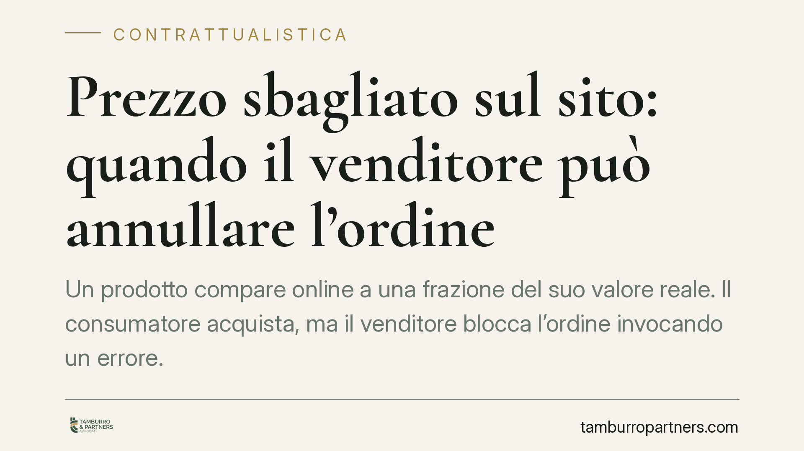

Prezzo sbagliato sul sito: quando il venditore può annullare l'ordine
Un prodotto compare online a una frazione del suo valore reale. Il consumatore acquista, ma il venditore blocca l'ordine invocando un errore. È lecito? La risposta dipende dal momento in cui il contratto si perfeziona e dalla natura dell'errore commesso. Un tema centrale per chi vende e per chi compra a distanza.

Il caso tipico
Un televisore da 900 euro viene esposto sul sito a 90 euro per un refuso nel gestionale. Decine di ordini vengono confermati in poche ore. Il venditore se ne accorge e comunica l'annullamento. Il consumatore chiede l'esecuzione del contratto al prezzo pubblicato. Chi ha ragione?
La risposta non è automatica. Occorre stabilire due cose: se e quando il contratto si è concluso, e se l'errore sul prezzo è tale da consentire l'annullamento.
Inquadramento normativo
Nel commercio elettronico il contratto si perfeziona secondo le regole del d.lgs. 70/2003 (attuazione della direttiva sull'e-commerce). L'esposizione del prodotto sul sito, di norma, non è un'offerta vincolante ma un invito a offrire: è l'ordine del cliente a costituire la proposta, che si perfeziona solo con l'accettazione del venditore. Molte condizioni generali di vendita precisano che il contratto si conclude con la conferma di spedizione, non con la ricevuta d'ordine automatica. Questa distinzione è decisiva.
Sul piano civilistico, gli artt. 1427-1430 del codice civile disciplinano l'errore come vizio del consenso. L'annullamento è ammesso quando l'errore è essenziale (cade su un elemento determinante del contratto, come il prezzo) e riconoscibile dall'altra parte, cioè quando una persona di normale diligenza avrebbe potuto accorgersene. Un prezzo pari a un decimo del valore di mercato è, di regola, riconoscibile: nessuno può ragionevolmente credere che un televisore di fascia alta costi 90 euro.
Va poi ricordato l'art. 51 del Codice del consumo (d.lgs. 206/2005), che impone al professionista obblighi informativi stringenti e la conferma dell'acquisto su supporto durevole. La conferma d'ordine non equivale però sempre ad accettazione contrattuale: dipende dal testo e dalla struttura del processo di acquisto.
Implicazioni pratiche
Per il venditore: se le condizioni generali collocano la conclusione del contratto al momento della spedizione, l'annullamento prima di quel passaggio è generalmente legittimo, salvo comportamenti scorretti. Se invece la ricevuta d'ordine è formulata come accettazione, il margine si restringe e resta praticabile solo la strada dell'annullamento per errore, con l'onere di dimostrarne essenzialità e riconoscibilità.
Per il consumatore: un prezzo palesemente incongruo difficilmente genera un diritto all'acquisto. La tutela è più solida quando l'errore è modesto (ad esempio uno sconto plausibile applicato per errore), perché in tal caso la riconoscibilità viene meno e il contratto tende a reggere.
Attenzione a un punto spesso trascurato: l'annullamento per errore non è un potere di ripensamento libero. Il venditore che invochi l'errore in modo pretestuoso, per pura convenienza commerciale, si espone a contestazioni sotto il profilo della buona fede e della correttezza (artt. 1175 e 1375 c.c.) e, sul piano consumeristico, a possibili profili di pratica commerciale scorretta.
Cosa fare in concreto
- Se sei un venditore: rivedi le condizioni generali e fissa con chiarezza il momento di conclusione del contratto, preferendo la formula della conferma di spedizione. Documenta l'errore (origine, entità, tempistica).
- Se ti accorgi dell'errore: comunica l'annullamento tempestivamente e per iscritto, prima della spedizione, indicando il fondamento (errore essenziale e riconoscibile) e rimborsando subito eventuali somme già incassate.
- Se sei un consumatore: conserva screenshot dell'annuncio, ricevuta d'ordine ed eventuali comunicazioni. Valuta l'entità dello scostamento dal prezzo di mercato prima di insistere sull'esecuzione.
- In caso di contestazione: verifica il testo esatto delle condizioni di vendita accettate al momento dell'ordine, perché è lì che si decide la partita.
- Prima di agire in giudizio: consigliamo di far valutare la singola fattispecie, poiché l'esito dipende da dettagli documentali che cambiano radicalmente lo scenario.
La regola generale, dunque, è che l'errore grossolano sul prezzo tende a tutelare il venditore in buona fede, mentre l'errore lieve e non riconoscibile protegge il consumatore. La differenza si misura sui fatti concreti.
Disclaimer
Contributo informativo a cura di Tamburro & Partners - Avv. Giuseppe Tamburro. Non costituisce parere legale.
Ogni contratto ha il suo equilibrio.
Se vuoi una revisione delle clausole o una redazione su misura, scrivi allo studio. Ti rispondiamo entro un giorno lavorativo.